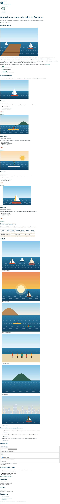

- UP
- UP3
- Criterios
- RA2 · 2g, 2h
- Duración
- 2 sesiones
- Agrupamiento
- Individual
- Entrega
- Aules · ZIP + URL del repositorio
- Tipo
- Desarrollo · formativa
Objetivos
- Explicar qué ventajas tiene separar el contenido (HTML) de la presentación (CSS) (CE 2g).
- Enlazar una hoja de estilos externa y una fuente web.
- Usar selectores de tipo, clase, id, descendiente, atributo, pseudoclases y pseudoelementos (CE 2h).
- Guardar la paleta en variables y comprobar el contraste del texto (WCAG 2.2, 1.4.3).
- Calcular la especificidad de un selector y predecir qué regla gana.
Recursos
- Punto de partida: la web base sin estilos. La serie entera trabaja sobre un único fichero HTML, la web del Club Náutico Mal Pas (descargar en ZIP), que no se modifica: cada práctica añade una capa a la misma hoja
css/estilos.css. - Teoría de la UP3, secciones 1 – 5 (diapositivas 5 – 39).
- Ejemplo guiado EG 3.1 · Mismo HTML, distinto CSS.
- Laboratorio CSS: selectores y especificidad, colores, unidades y tipografía.
- Plantilla LEEME-plantilla.md.
Resultado esperado
Así debe quedar la página al terminar esta práctica. Desplaza las capturas para verla entera.

1Prepara el proyecto
Descarga la web base del Club Náutico Mal Pas (carpeta practicas/progresivas/base/) y cópiala como lmsgi/UP3/PP3.1/ en tu repositorio. Ábrela en VS Code con Live Server: verás una página completa y válida, pero sin estilos. Recórrela y fíjate en las clases que ya trae el HTML (.portada, .tarjeta, .boton…): son los «ganchos» que usarás en toda la serie.
Crea el fichero css/estilos.css y enlázalo en el <head>, en el lugar que indica el comentario. Comprueba que funciona con una regla de prueba (por ejemplo, body { background-color: yellow; }) y bórrala.
Durante toda la serie no se modifica el HTML: todo el diseño sale de la hoja de estilos. Es justo la ventaja del CSS externo (CE 2g): explica en el LEEME.md qué pasaría si el club tuviera 40 páginas y los estilos estuvieran en atributos style.
2La paleta en variables
Escribe al principio de la hoja un bloque :root con la paleta del club. Las variables CSS se ven a fondo en la sección 11, pero usarlas desde el principio te ahorrará trabajo: si un color cambia, se cambia en un solo sitio.
| Variable | Valor | Uso |
|---|---|---|
--marino | #0B3C5D | Títulos, cabecera de la tabla, pie |
--marino-claro | #E3EEF5 | Fondos suaves y texto sobre marino |
--turquesa / --turquesa-oscuro | #1B998B / #12695F | Detalles / enlaces y cifras |
--arena | #F6EFE4 | Secciones alternas, filas pares |
--sol | #F6C453 | Etiquetas y foco sobre fondo oscuro |
--coral / --coral-oscuro | #C8472B / #A33A22 | Botones y precios / botón al pasar el ratón |
--texto / --texto-suave | #1F2933 / #52606D | Texto normal / secundario |
--blanco, --borde | #FFFFFF, #DDE3E8 | Fondo y líneas |
Añade también --fuente-titulos y --fuente-texto (paso 4). Con el selector de color de DevTools o el comprobador de WebAIM, anota en el LEEME.md el contraste de --texto-suave, --turquesa-oscuro y --coral sobre blanco. ¿Por qué --turquesa no sirve para texto y --turquesa-oscuro sí? Puedes probarlo antes en el laboratorio de colores.
3Estilos generales con selectores de tipo
Da a body la fuente del texto, font-size: 1rem, line-height: 1.6, el color --texto y el fondo blanco. Agrupa h1, h2, h3 en una sola regla con la fuente de los títulos, interlineado 1.2 y color marino, y después da a cada uno su tamaño en rem: 2.75, 2 y 1.375.
body {
font-family: var(--fuente-texto);
font-size: 1rem;
line-height: 1.6;
/* … */
}
h1,
h2,
h3 {
/* lo común a los tres títulos */
}Inspecciona un párrafo en DevTools > Calculado: el color le llega heredado de body. ¿Por qué los enlaces no heredan ese color? Respóndelo en el LEEME.md.
4Fuente web
Enlaza la fuente Nunito (pesos 600, 700 y 800) de Google Fonts en el <head>, antes de tu hoja, y define la pila de fuentes con alternativas por si no carga:
<link rel="preconnect" href="https://fonts.googleapis.com">
<link rel="preconnect" href="https://fonts.gstatic.com" crossorigin>
<link href="https://fonts.googleapis.com/css2?family=Nunito:wght@600;700;800&display=swap" rel="stylesheet">
<link rel="stylesheet" href="css/estilos.css">--fuente-titulos: "Nunito", "Trebuchet MS", sans-serif;
--fuente-texto: system-ui, -apple-system, "Segoe UI", Roboto, sans-serif;En el validador HTML el & de la URL debe escribirse &. Prueba combinaciones de tamaño, peso e interlineado en el laboratorio de tipografía antes de decidir.
5Selectores de clase y descendientes
Usa las clases del HTML para dar estilo a los textos destacados:
.portada__antetitulo: 0.875rem, negrita, mayúsculas context-transform,letter-spacing: 0.15emy color turquesa oscuro..portada__textoy.seccion__intro(en una sola regla): 1.125rem y texto suave..tarjeta__nivelen cursiva y texto suave;.tarjeta__preciocon la fuente de títulos, 1.5rem, peso 800 y coral.- Las cifras del club: selector descendiente
.datos strong, 2rem, fuente de títulos y turquesa oscuro.
6Pseudoclases y pseudoelementos
- Enlaces:
a,a:hover(coral) ya:focus-visiblecon unoutlinede 3 px. Pruébalo con la tecla Tab: el foco siempre debe verse. - Primera línea del primer párrafo de «Quiénes somos» en seminegrita:
#nosotros p:first-of-type::first-line. - Tabla de horario: título (
caption) en negrita alineado a la izquierda, cabecera en marino y filas pares con fondo arena con:nth-child(even). - Opiniones: el texto en cursiva y el autor (
cite) en normal, negrita y marino. Las leyendas (legend) del formulario con la fuente de títulos.
7Selectores de atributo
Añade un icono delante o detrás de cada enlace según su tipo, sin tocar el HTML:
a[href^="tel:"]::before {
content: "☎ ";
}
/* Haz lo mismo con los enlaces mailto: (✉) y con los externos, rel="external" (↗ detrás) */8Cascada y especificidad
Calcula en el LEEME.md la especificidad (id, clase, tipo) de estos selectores de tu hoja y ordénalos de más a menos fuerte: #nosotros p:first-of-type::first-line, .horario tbody tr:nth-child(even), a[rel="external"]::after, .datos strong y legend.
Después haz este experimento y explica el resultado: añade al final de la hoja p { color: red; }. ¿Por qué se vuelven rojos casi todos los párrafos, pero no el nivel de las tarjetas (.tarjeta__nivel)? Borra la regla al terminar. Puedes comprobar tus cálculos en el laboratorio de selectores.
9Valida y entrega
Pasa la hoja por el validador CSS del W3C y el HTML por el validador HTML: 0 errores. Haz un commit con un mensaje claro, por ejemplo PP3.1: paleta, tipografía y selectores.
Niveles de realización
Básico
Pasos 1 – 5 y 9.
Estándar
Todos los pasos, con el LEEME.md completo (contraste y especificidad).
Ampliación
Cambia el color de la selección de texto con ::selection, y sustituye el enlace de Google Fonts por una fuente alojada en tu carpeta fonts/ declarada con @font-face. Explica qué ganas y qué pierdes.
Antes de entregar, comprueba que…
- La hoja es externa y está enlazada; el HTML no tiene atributos
style. - La paleta está en variables y todos los colores de la hoja usan
var(). - Los títulos usan Nunito y hay una fuente alternativa.
- Hay al menos un selector de cada tipo: tipo, clase, id, descendiente, atributo, pseudoclase y pseudoelemento.
- El foco de los enlaces se ve al navegar con Tab.
- El
LEEME.mdrecoge los contrastes, la especificidad y el experimento de la cascada. - Validadores CSS y HTML: 0 errores.
- Declaración de uso de IA en
LEEME.md.
Entrega
Comprime la carpeta PP3.1 (con index.html, css/, img/ y LEEME.md) como PP3.1_Apellido_Nombre.zip, súbela a Aules y escribe en el comentario la URL de tu repositorio.
Uso de inteligencia artificial. Puedes usar asistentes de IA para entender un error o resolver una duda, pero no para hacer la práctica por ti. Si los usas, decláralo en el fichero LEEME.md de tu entrega (qué herramienta, para qué y qué cambiaste tú). Debes poder explicar y defender todo lo que entregues (instrumento IE6). Presentar código generado sin declararlo supone un 0 en la práctica (PD, apartado 6.5).
Evaluación
Práctica formativa de la serie progresiva de la UP3: no tiene nota propia, se revisa en clase con la lista de comprobación y prepara las prácticas calificables (PR 3.1 – 3.5) y el Proyecto 3. Trabaja el criterio 2g, 2h del RA2. El profesor puede pedirte que expliques cualquier regla de tu hoja (IE6).